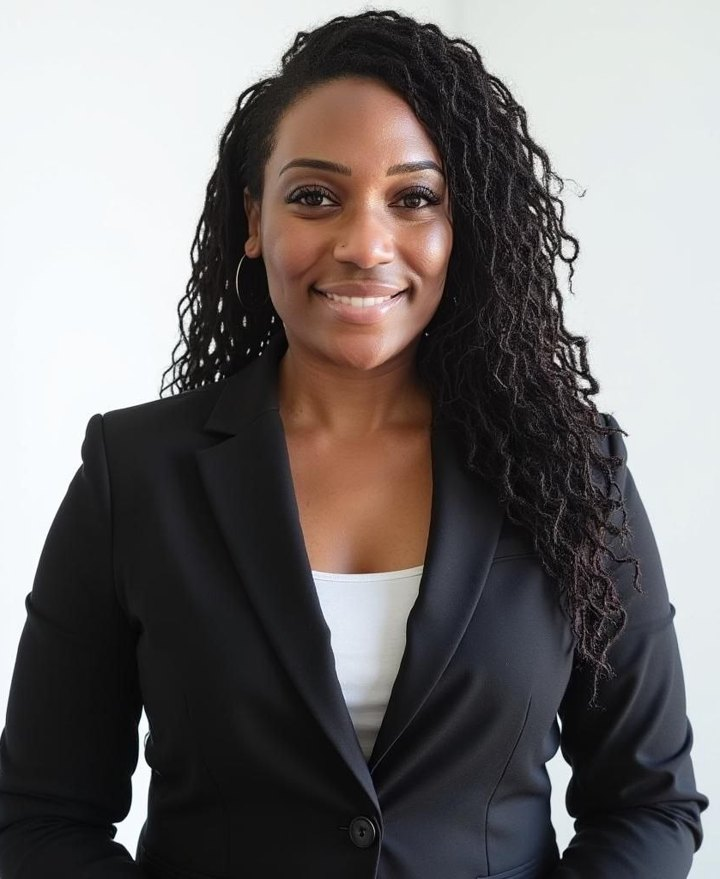

Case screening for merit
A clinical read of the records before you invest, so weak cases exit early and strong cases move with confidence.
Obsidian Legal Nurse Consulting provides medical record review, medical chronologies, and standards of care analysis for attorneys and litigation teams in California and Arizona.
 From the Floor
From the Floor The Clinical World
The Clinical WorldA clinical read of the records before you invest, so weak cases exit early and strong cases move with confidence.
The full record distilled into a precise, cited timeline your whole team can navigate at a glance.
What the standard required, what the record shows, and where they diverge, stated plainly.
EHR audit trails, nursing notes, medication records, and the details that hide between entries.
Question strategy, exhibit preparation, and clinical translation when testimony turns technical.
Delivered under your brand when you need it that way: your firm's name, our clinical engine.
Injury cases live and die on the records. Our nurses read them for a living.Pain management and orthopedic care experience
Send the file securely. We confirm scope, timeline, and deliverable in writing before work begins.
A registered nurse works the record line by line: chronology, standards, gaps, and strengths.
Cited, court-ready deliverables in your format, with findings walked through live if you want them.
From the twelve-article Obsidian insights library.
What audit trails reveal that printouts hide.
The clinical eye as litigation strategy.

Obsidian's consultants are practicing registered nurses. Jeanie Vatelia brings decades of clinical experience across pain management and orthopedic care, charting systems, and the details that decide cases, and puts that clinical eye to work for legal teams.
Licensed in California and Arizona, and holding APC registration in New Zealand, she approaches every engagement with the discipline of patient care: precise, documented, and honest about what the record does and does not show.
Talk through the case with a registered nurse before sending a single page. No cost, no obligation.
Tell us about the matter. A registered nurse reviews every inquiry, and initial consultations are free.
Start the IntakeObsidian is building its consultant bench: Legal Nurse Consultants, Expert Witnesses for legal and medical malpractice matters, and clinical legal support roles. Applications and interviews are open now, so the right help is ready the moment cases arrive.
Apply Now